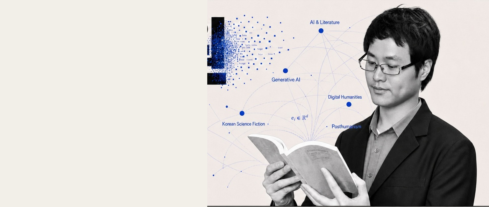

AI가 소설을 쓰는 시대,
문학이란 무엇인가
문학평론가 · 제주대학교 국어교육과 교수
AI와 문학, 한국 SF와 포스트휴머니즘, 생성형 AI 문학교육을 연구하며 문학 연구·비평·교육을 연결합니다.

Selected books
저서
YouTube
유튜브
Recent activity
최근 활동
Research constellation
주요 연구 축
Profile & contact
읽고, 쓰고,
연결합니다.
강연·자문·연구·협업 문의와 제안을 환영합니다.